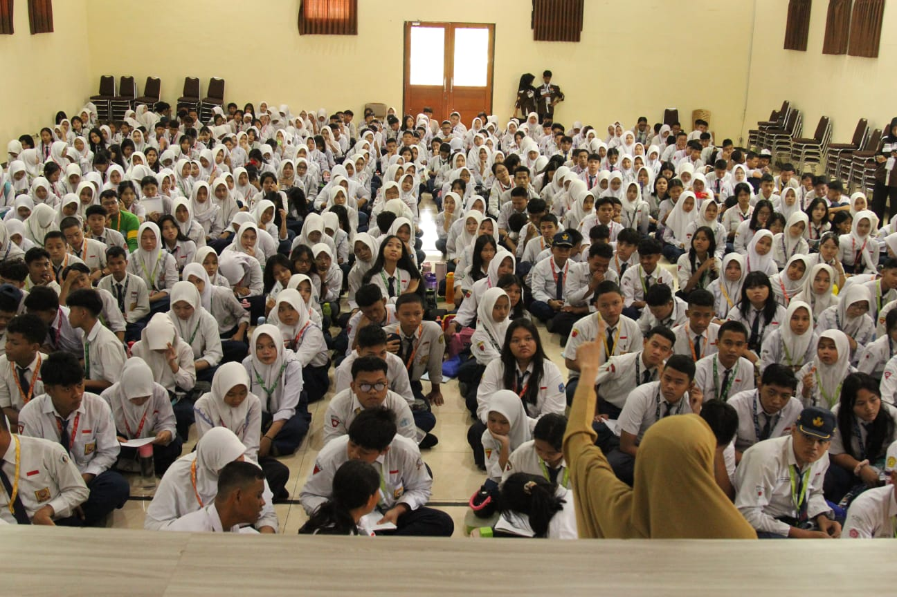
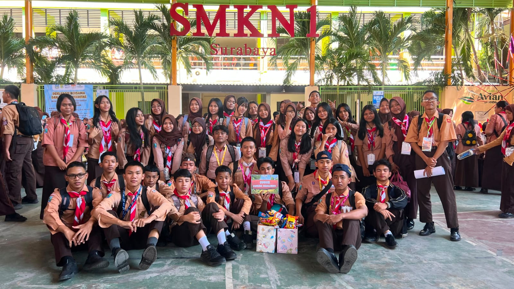

- SekolahSMKN 1 Surabaya
- JurusanTeknik Komputer dan Jaringan (TKJ)
- KelasXI
- MinatHTML, CSS, JavaScript, dan teknologi komputer
👋 Selamat datang di website saya
Halo, saya Lukman Azzis
Saya adalah pelajar Teknik Komputer dan Jaringan yang tertarik pada dunia teknologi, pemrograman web, dan kreativitas digital. Website ini dibuat sebagai portofolio pribadi untuk tugas praktikum CSS.
Tentang saya
Pendidikan & Profil
Informasi singkat mengenai latar belakang dan minat saya.
Riwayat Pendidikan
Saat ini
SMKN 1 Surabaya
Jurusan Teknik Komputer dan Jaringan.
Sebelumnya
SMPN 16 SURABAYA
Pendidikan menengah pertama.
Pelatihan / Training
Belajar mandiri pemrograman
Isi dengan pelatihan atau sertifikat yang benar-benar pernah diikuti.
Kegiatan belajar
Jadwal Pelajaran
Contoh tabel dengan styling CSS. Ganti mata pelajaran dan jam sesuai jadwal asli.
| Hari | Waktu | Mata Pelajaran | Keterangan |
|---|---|---|---|
| Senin | 07.00–09.00 | Pemrograman Web | Praktik |
| Selasa | 07.00–09.00 | Administrasi Sistem Jaringan | Teori & praktik |
| Rabu | 07.00–09.00 | Infrastruktur Jaringan | Praktik |
| Kamis | 07.00–09.00 | Basis Data | Praktik |
| Jumat | 07.00–09.00 | Pendidikan Pancasila | Pembelajaran |
Catatan: jadwal di atas hanya contoh, bukan jadwal resmi sekolah.
Pengalaman
Aktivitas & Minat
Beberapa hal yang saya sukai dan kembangkan.
💻
Pemrograman
Mempelajari HTML, CSS, JavaScript, dan membuat proyek web sederhana.
🛠️
Teknologi Jaringan
Mengenal komputer, jaringan, konfigurasi, dan pemecahan masalah teknis.
🍳
Memasak
Mencoba resep dan mengembangkan kreativitas melalui kegiatan memasak.
Dokumentasi
Galleries
Tempat untuk menampilkan foto kegiatan sekolah, praktik, proyek, atau hobi.

